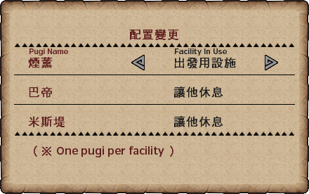

Main House Main House
Main House Main HouseYour main House room is an area containing a few different things:
Equipment Box: A standard equipment box that allows you to manage items, change all your equipment and change pugi cuffs.
Bed: The bed allows you to test out weapons and their movesets. The ability to test SR movesets is unlocked a while after starting but before starting SR (contact me if you know specific numbers).
Bookshelf: The bookshelf allows you to check monster kills, see information on Elements and HH songs, change your house's style (costs GCP, not worth spending if you have anything else to spend it on) and to change the title displayed above your name in town.
Dining Tables: A fully upgraded house contains three dining tables, these allow you to feed two, four and eight people in your house. Using the bento function is much easier to manage than actually using your house for this purpose.
Outside of these it is also where your Partner and active Partnyaa reside. If you talk to them in here you can give them HRP Tickets to enable quicker ranking up for both.
 Display Gallery
Display GalleryThe display gallery is a customisable room that you can set up furniture and boxes in. This mainly serves as a way to get Gallery Gems and other items. These are decent gems that you can gain from getting the Furniture NPC to evaluate your house. There is not much purpose to this room outside of vanity as the prizes for the gallery rating are pretty much all outdated and have relatively little use.
 Duck (Gook) Farm
Duck (Gook) FarmThe Gook farm contains a number of cats and an area in which you can make a home for gooks. Gooks give free items after quests sometimes and allow for the use of Gook Cooking which enables the refining of items into other types.
The Cat sitting on the tree stump in your farm allows you to get materials after each quest, you can use one type of the various tools that are available by simply talking to the Cat.
You can upgrade your tools by making furniture for the Display Gallery, stamps are given based on totals spent which can be redeemed for the option to purchase better tools. You can follow the following image guide to make furniture for stamps easily.
The Tools themselves are the following:
Most of the options give what you would expect from taking their names literally and for the majority only have a true use before G Rank, with actual Farming always being better. Mocha Pots and Cooking are always useful.
The 'Bargains' option will occasionally appear underneath Mocha pots, this gives out various useful tools and materials such as Mega Pickaxes, Max Potions, Rare Ores, etc.
Most of these should be self-explanatory outside of the Mocha pots option which allows you to use a Mocha pot, a general guide to how these work can be found here, the minute boundaries are instead quests taken with the item in the ground with rainbow appearing after red. Mocha pots will need to be purchased in the shop and are named 摩卡醃壺.
Enter your Gook Farm by going to your house and selecting the Gook icon.
Talk to the Manager Felyne at the rocky trash heap at the back of the farm.
Talk to the Guild Master and access the Gook Quests section 咕咕鴨任務 and select the quest for the gook colour you want. White, Yellow, Black, Brown and Blue are available as starter choices.

| Gook Quests. | |
| 追尋蛋【密林的怪鳥】 | Yian Kut-Ku in the Jungle. Sonic bomb for shiny. |
| 追尋蛋【沼澤的桃毛獸】 | Congalala in the Swamp. Break tail. |
| 追尋蛋【沙漠的盾蟹】 | Daimyo Hermitaur in Desert. Sonic bomb while it guards or interrupt it after a zone change. |
| 追尋蛋【火山的岩龍】 | Basarios in Volcano. Cause it to leap up out of the ground. |
| 追尋蛋【雪山的轟龍】 | Tigrex in Snowy Mountains. Get it to charge into a wall in Area 8. |
For the quest you simply need to cause the Monster within the quest to drop a shiny, the methods are detailed below. After this simply return it to the base camp and deposit it in the Red Box. The supply box for these quests contains Mega Juices and Sleep Throwing Knives which will make it easier to handle the returning part.
After you successfully deliver the egg and return to town go back into your farm and talk to your Manager again, mash through his text and return to the Guild Master.
Select the Gook Quests section again and you should only see one quest, to deliver 1 Blueprints (破燏的藍圖).
Despite the quest information stating 1, it’s actually 5. You get the items from simply beating up the Melynx wandering in any zone.
Enter your Farm and talk to the manager, then exit and enter again. Your manager will shout at you to tell you that he has transformed his kingdom of trash into a bed for the child he is fathering for you.
Go up to the egg and interact with it, select any option for the first and then for the second choose:
First – Normal Sized Gook
Second – Smaller Gook
Third – Larger Gook
You can only do this once per quest taken so you will need to do around five quests, interacting with the egg after each.
When the egg is ready to hatch the Manager will shout at you to let you know.
After the hatching animation you will need to name the gook and interact with it three times. The first time you will pick it up, the second you will feed it. After this, talk to the manager again to trigger your next quest appearing on the guild master.
The next quest is much the same as the previous one, you will need to deliver 5 blueprints (巴巴的藍圄) that you get from Melynx shinies.
After getting back from the quest you will need to talk to the Manager, exit and re-enter. This will give you a cutscene showing off the new pond you got the tickets for completing the basic quest line and unlocking Gook Cooking.
Should you want more Gooks you can go through the process with the egg collection again and get new ones.
I'll cover this later. The board allows you to change your Gooks' clothing and the visuals of the bed and pond facilities.
You can talk to gooks with the confirm button as with any NPC, which brings up a detailed interaction menu. This menu allows you to Carry them, Feed them items or send them away to die in the wilderness.
After getting a Gook you can periodically get batches of items (from the caretaker or the shinies) which can include materials for the creation of Gook Tools. Gook tools are special versions of Pick Axes, Bug Nets, Fishing Bait and a new Gathering Glove tool. These are unique in that they have a fixed chance of doubling anything gathered using them. This means for example if you use a Gook Fishing Bait you will have a chance of simply getting 2x of whatever you fish out rather than 1x.
| Gook Tools | |
| Tool Name | Trade Materials |
咕咕鴨的釣餌 Gook Fishing Bait |
10x Tools for 1x 閃閃的東西 1x Tool for 1x 閃閃的碎片 |
咕咕鴨的十字鎬 Gook Pickaxe |
10x Tools for 1x 亮亮的東西 1x Tool for 1x 亮亮的碎片 |
咕咕鴨的補蟲網 Gook Bug Net |
10x Tools for 1x 清爽的東西 1x Tool for 1x 清爽的碎片 |
咕咕鴨的拳套 Gook Gloves |
10x Tools for 1x 軟軟的東西 1x Tool for 1x 軟軟的碎片 |
迷路球 Lost Ball (Gook Farcaster) |
10x Tools for 1x 軟軟的東西 1x Tool for 1x 軟軟的碎片 |
These tools are naturally very useful whenever you need to get a lot of any low percentage gatherables as they can double the stacks. The tools seem to break at around the same rate as the Mega versions of their associated tools.
You can carry up to three Lost Balls (迷路球). These can have up to four different effects depending on the situation:
Effect 1: Randomised between Farcaster and Nearcaster effects.
Effect 2: If the map has a random spawn, randomised between either warping to a random area or the Effect 1 results.
Effect 3: If you have a Gook Charm you will be warped to the secret area if it's available or when inside it or unavailable, you will get Effect 2.
.
On the Guild Master you will find new types of gathering quests that are special Gook Gathering Quests. Functionally these are just normal quests with Gook Junk (咕咕鴨的雜物) added to the item pool and a chance to encouter giant Gooks. Look up the Gook Junk item on the database to find maps if you want to grind out 99 of these for the Gook Charm. They are a flat 4% chance from gathering and 100% from finding Giant Gooks. Giant Gook spawn rates can be increased using G Rank Sigils.
| Gook Junk Items | |
| Gook Junk Items | Trade Materials |
咕咕鴨的護身符 Gook Charm |
99x Junk for 1x Charm An item that has a huge number of supposed effects but ultimately the biggest effects are simply that it makes it more difficult to break Gook Tools, can adjust how Gook Farcasters work and sometimes gives additional items from Gook Cooking (estimated at 1% or lower chance). This also enhances a number of the mostly useless Gook items such as the Gook Plushies. |
減肥餐 Yase Yase Food |
3x for 1x Food Shrinks Gooks when used as feed |
增胖餐 Plump Food |
10x for 1x Food Expands Gooks when used as feed. |
After you have a Gook you will gain access to the ability to perform Gook Cooking (or Stewing), this allows you to refine a batch of items or single items into other types.
Cooking itself is simply a basic timing minigame. If you watch the pot lid bounce you will see that it does small bounces followed by a larger one lifting the Gook into the air, if you simply hit confirm when it lands back on the pot after the larger jump you will always be successful.
Bad quality imgur gifv showing timing.
A recipe that is worth utilising is the one for making Mysterious Stones (謎之發光石) by cooking 10x Mysterious Shard (謎之發光碎片), you can buy the former item for 2200 GCP or the latter for 200 GCP. You can also simply go to the Island in the Jungle and gather infinitely. There is a flat 5% chance of getting a Mysterious Shard at any G Rank insect gathering spot in the game meaning you can simply hold gather down and wait to get enough.
Even choosing buying, it's worth having the Gook so you can save 200 GCP instead of wasting it when you can simply cook a 10 stack for less.
A notable recipe for mid to late game grinds are those for all items related to Hiden Grind. You can trade HC carves for Hiden Souls, GHC carves for Hiden Ribbons and Conquest Weapon Gems for Hiden Merits. As you will naturally get a bunch of at least two of these item types it can be a good help for this grind.
Lost CatThe Lost Cat is an NPC that spawns in your Gook Farm with a certain chance after quests, he will ask you to help him find an item he has lost and gives items in return which can include Mystery Crowns and their G Rank Equivalent which are used to craft an Armour Set (深黑) that can not be acquired anywhere else in the game.

To quickly locate the item he has lost simply refer to the image below. Spam through his text once and then talk to him again, referencing the leftmost column of text to the image. I am currently lacking 2 images for this text meaning you may ocassionally have to look in those 2 areas if you roll that location.

 Pugi Farm (My Tore)
Pugi Farm (My Tore)After you hit G Rank you can simply spam the Talk option on the NPC to get up to 100P free! Use these to get the G Cuff license at GR50!
New facilities, pugis, etc. on the Pugi Farm are added at 00:00 TW time!
It's recommended to have a sub after hitting HR3 to start on a Pugi.
The Pugi Farm (or My Tore) is a facility you gain access to after hitting HR3, it is a customisable area in which you can set up a Pugi, various facilities to train said Pugi and Airou (Felyne) Stores that provide unique items and combinations not found elsewhere.
Pugis themselves are exceptionally important, they are the Frontier equivalent to Talismans or Charms and can be used to add extra skill points to skills. The use of a Pugi is absolutely vital in setting up the overwhelming majority of endgame sets and should be the first priority going into the Pugi Garden.
When you reach HR3 you will be able to enter the Pugi Farm (or My Tore), this is accessed at your house via the icon of a Pugi (Pig). You will initially be greeted by an NPC:

She will ask you a number of questions which will dictate which of the three potential managers you are assigned:

| Answers | Manager Assigned |
| YYY | Middle |
| NYY | Random |
| YYN | Youngest |
| NYN | Random |
| YNY | Eldest |
| NNY | Random |
| YNN | Youngest |
| NNN | Eldest |
After waiting until midnight the following day (00:00 TW Time) and you will be assigned the Manager based on your choices above.
After being assigned your Manager you can talk to her to get presented with the following menu:
Tutorial: Chinese information on the Pugi Farm
Talk: Allows you to talk to her, she will sometimes make requests for items or ask questions. This affects her affection values, see Manager Requests below.
Gift Clothing: You can spend the daily P you get from her on clothing for her to wear. She wears this based upon her mood and it gives you no direct benefits.
Gift Items: Giving items to the Manager causes affection to increase and her to give you an item. See Manager Gifts section below.
Pugi Menu: Allows you to change your Pugi's options and buy or expand related facilities, see Pugi Menu section below.
Claim Daily Points: You get 1 then 2 points alternating days, do this every day.
Special Commissions: Completing the tasks listed in here give you special items such as Disposable High-Grade Earplugs or G Whetstones.
Convert Points to GCP: Converts the Daily Points into Guild Contribution Points that you get from having a Rasta and going on quests. The rate is 30P to 3000GCP. Useful when you've got all the facilities you desire.
Airou Plaza: See Airou Plaza section below.
Bonus and Forgotten Points
After HR5, HR6 and HR7 you may claim a batch of Points by talking to the farm Manager, for a maximum of 90P. You may also claim any points you have forgotten to collect in the same manner (up to 14P are stored, any past this amount will be permanently lost).
You should initially focus all points entirely on getting yourself a Pugi (增加噗吱豬, 30P) followed by a Departure Facility (出發用設施, 30P) after having both of these you should then either purchase a Premium Outfit or purchase one of the Standard ones (20P) if you don't want your pugi to wear nothing but a nappy.
Standard Outfits cost 20P on top of the 60P required to get a Pugi and the Departure Facility, these outfits have two slots for any 1 or 2 slot Standard Cuffs to be slotted into. Premium cuffs cannot be used at all with these outfits. The default outfit of the Pugi in the nappy can happily take standard cuffs making these optional.
Premium Outfits are overall a better choice, these outfits have two slots for either Premium or Standard Cuffs (or combinations of both). Premium Cuffs can only be slotted into Premium Outfits. The best cuffs available before G Rank are Premium Cuffs, especially for Blademasters. You can get cuffs granting Artisan which can enable Sharpness +1 where you would otherwise need multiple gems.
I would personally recommend getting a Premium Outfit regardless, Capcom have previously given out free lottery tickets have given out materials to craft Premium Cuffs. These would be completely useless to you without a Premium Outfit.
If you are going the paid method, I would personally recommend buying a premium outfit and a pack of G premium skill cuffs after hitting GR50 and unlocking the G license. You get 100P for simply having reached G Rank (spam the talk option on your manager) which makes getting the license a non-issue.
After getting the Pugi items I would recommend working on the Airou Plaza stores. It's also potentially wise to save points until you have 60P spare, this is because upon hitting G rank you will need to spend 60P on the G Rank Pugi Cuff License in order to utilise G Rank cuffs. This is required with both Premium and Normal cuffs and cannot be bypassed in any way.
Most of the things the Manager asks you are simple questions of no real importance however, she can also request a number of items in order to heal your Pugi. This can only happen after obtaining a Pugi.
The Eldest Sister requests: 3x Sleep Herbs and 5x Ice Crystals (3x 眠草, 5x 冰結晶)
The Middle Sister requests: 4x Sleepy Fish and 3x Cold Meat G (3x 眠魚, 3x 冷烤肉Ｇ)
The Youngest Sister requests: 2x Nutrients and 1x Cold Drink (2x 營養劑, 1x 冷飲)
Cold Meat G is made by combining normal Cold Meat (冷烤肉) with a Universal BBQ kit (萬能燒烤組合) and then performing perfect cooking with the spit that results.
A universal BBQ Kit is made by combining a Female BBQ Kit (女人的烤肉組合) with a Universal BBQ Spit (萬能燒烤工具)
Cold Meat is made by combining Raw Meat (生肉) with Ice Crystals (冰結晶).
The Youngest Sister likes Yian Garuga Materials, the Middle Sister likes Rajang Materials and the Eldest Sister likes Gold Rathian and Silver Rathalos materials.
There are a number of special items you can be given from your Manager. Some of these item are exclusively given to you as gifts from her, others need to be gifted to you in order to unlock the item at the Airou Plaza Combination Store (see Airou Plaza section).
| Gifts for individually preferred items (Combinable) | ||
| 砥石Ｇ | G Wheststone | Recovers 200 sharpness (Normal whetstones recover 150) |
| 高速砥石 | Hi-Speed Whetstones | Recovers 75 sharpness with a single swipe (Normal whetstones recover 150) |
| 拋棄式耳塞 | Disposable Earplugs | Resists any roar that could be countered by Earplugs |
| Gifts for individually preferred items (Non-Combinable) | ||
| 金水煮蛋 | Boiled Golden Egg | Recovers some health |
| 銀水煮蛋 | Boiled Silver Egg | Recovers all health and maxes out HP bar (Max Potion effect). |
| 無懼果實 | Anti-Flinching Fruit | Stops you flinching and small knockback from attacks for a limited time. |
| 拋棄式高級耳塞 | Disposable High-Grade Earplugs | Resists any roar that could be countered by High-Grade Earplugs |
| Gifts for Rare-5 Items | ||
| 少女之心【體】 | Maiden's Heart [Health] | 1/8th chance of 20 Health Recovery. 1/8th chance of breaking. |
| 少女之心【避】 | Maiden's Heart [Evasion] | 1/8th chance of reducing damage taken to 1. 1/8th chance of breaking. |
| 少女之心【氣】 | Maiden's Heart [Stamina] | 1/8th chance of 25 Stamina Recovery. 1/8th chance of breaking. |
| Combined Maiden's Hearts (Level 3 Airou Combination Booth required) | ||
| 少女的願望【體】 | Maiden's Heart [Health] | 1/8th chance of 30 Health Recovery. 1/8th chance of breaking. |
| 少女的願望【避】 | Maiden's Heart [Health] | 1/8th chance of reducing damage taken to 0. 1/8th chance of breaking. |
| 少女的願望【氣】 | Maiden's Heart [Health] | 1/8th chance of 75 Stamina Recovery. 1/8th chance of breaking. |
| Combined Maiden's Wishes (Level 3 Airou Combination Booth required) | ||
| 少女的全部 | Three Maidens' Wish | 1/8th chance of reducing damage taken to 0 and recovering 30 HP and 75 Stamina. 1/8th chance of breaking. |
| Other possible gifts | ||
| Potion (回復藥), Mega-Potion (回復藥‧大), Nutrients (營養劑), Energy Drink (元氣飲料), Herbal Medicine (漢方藥), Max Potion (秘藥), Well-Done Steak (全熟肉), Well Done Fish (全熟魚), Farcaster (回歸球), Herb (藥草), Mega Juice (強走藥‧大) | ||
The Pugi Menus are pulled up by choosing the appropriate Pugi option (噗吱豬) in the Manager's Menus. Selecting the Pugi Menu will present you will the following:
Check Status: Shows you information on your Pugis including Birthday, Level and Stats. See below.
Expand Pugi Facilities: Allows you spend Points on the various facilities related to the pugi, see the table below for details.
Increase Pugi Count: Allows you to get more Pugis and Standard Outfits. Each pugi costs 30P and you can have a maximum of 3. All outfits cost 20P and more are unlocked as you purchase them. This is where you get your first Pugi.
Change Clothing: Allows you to select your Pugi's outfit. White Names are Standard Outfits and Yellow Names are Premium Outfits. Only Premium Outfits may use Premium Cuffs.
Pugi Cuffs: Allows you to talk to her, she will sometimes make requests for items or ask questions. This affects her affection values, see Manager Requests below.
Carried Items (GR350): Causes your Pugi to use the selected item on you at a certain rate when it's valid for it to do so, this must be set every log in and uses the items directly from your box. Unlocked when at G Rank and at GR350.
To simply get a Pugi on quests you will want to spend points on three different things:
A Departure Facility within Pugi Facilities (擴建噗吱豬牧場 > 出發用設施 (30P))
1 Pugi within Pugi Expansion (噗吱豬的增加 > 增加噗吱豬 (30P))
Either the free Standard Outfit or one within Pugi Expansion (噗吱豬的增加 > 20P Items) or a Premium Outfit from the Item Mall.
You can equip a Pugi Cuff by talking to the Manager, the Blacksmith or by using an Equipment Box. G Rank cuffs require a license which can be bought within Pugi Facilities for 60P Pugi Facilities (擴建噗吱豬牧場 > 60P Item)
After you have the pugi and facility complete (a trampoline on the lowest level of the Pugi Farm) you can interact with a board on the lowest level of the farm:
This allows you to set which facilities your pugis are using and should be used to select the new Departure Facility (出發用設施) on a Pugi which result in it leaving with an animation and will allow it to accompany you on quests.

With your pugi coming you for quests you can potentially get extra carves based on what you yourself carved during that quest at the Pugi Dirt Pile.
If you are at least GR300 you can also talk to the Pugi Manager and choose an item that your Pugi can use on you from your item box, this is triggered in the appropriate circumstances you would expect (taking damage, lowered stamina, being poisoned) based on RNG and your loosely on your Pugi's stats.
Pugi Stats
| EN | CN | Description |
| Name | 名字 | The Pugi's Name. |
| Birthday | 生日 | The Pugi's Birthday. |
| Hunger | 飢餓度 | How hungry the Pugi is. |
| Health | 健康狀況 | How healthy the Pugi is. |
| Clothing | 服裝 | What clothing the Pugi is wearing. |
| Pugi Cuff | 技能鈕扣 | What Cuff the Pugi has equipped. |
| Level | LV | Increases maximum number of times the pugi can appear in quests. Increases chance of bringing items back to the Dung Pile. Lv = (Int + Str + Mot) / 5 (Rounded down). |
| Intelligence | 聰明度 | Causes the Pugi to attempt to bring items more relevant to your situation. |
| Strength | 運動力 | Increases the likelyness of the Pugi appearing when you are on low health or taking damage. |
| Motivation | 幹勁 | Decreases the time between Pugi appearances in quests. |
| Item | 道具 | The item the Pugi will use upon appearing in quests (Unlocked at G Rank at GR350). |
Pugi Facilities Costs and Stat Changes
| Facility | Cost | Int | Str | Mot |
| Obstacle Course Facility 障礙物運動用設施 | 30P | +2~3 | +1 | -1 |
| Climbing Facility 爬樹運動用設施 | 30P | -1~2 | +1 | +3 |
| Running Facility 跑步運動用設施 | 30P | +1 | +3 | -1~2 |
| Learning Facility 學習用設施 | 30P | +3~4 | -2 | +1 |
| Departure Facility (Trampoline) 出發用設施 | 30P | -1 | +1 | +1 |
| Using the Departure Facility means the Pugi will accompany you on quests. This is what enables the use of Pugi Cuffs. |
||||
| Idle - | - | -1 | +2 | +0 |
Pugi Cuffs are the Frontier equivalent to Charms or Talismans. Unlike their mainline equivalents, Cuffs always have static skill point values, this means there's no RNG involved outside of that to get the items to create them, a Cuff that has +4 in Earplugs for example will only ever have +4 in Earplugs when crafted.
You can craft Pugi Cuffs at the Blacksmith. There are two types of Cuff that can be created, Premium and Standard. Premium Cuffs require items that are paid for and require that your Pugi has a Premium Outfit (also paid for) to be used, Standard Cuffs can be equipped in both Premium Outfits and Standard Outfits that you get one free of and more at the cost of 20P at the Pugi Manager.
Below G Rank standard cuffs are not terribly good when compared to Premium ones. At G Rank both Premium and Standard cuffs are incredibly good, with both being equally viable when trying to make an endgame level set.
You can equip a Pugi Cuff by talking to the Manager, the Blacksmith or by using an Equipment Box. G Rank cuffs require you to be GR50 and to buy a license for 60P in the Pugi Facilities menu! (擴建噗吱豬牧場 > 60P Item)
I would personally recommend getting a Premium Outfit regardless of your intentions towards Premium Cuffs, Capcom have previously given out free lottery tickets for lotteries have given out materials to craft Premium Cuffs. These would be completely useless to you without a Premium Outfit but potentially build enabling with one.
If you are going the paid method, I would personally recommend buying a premium outfit and when relevant, a pack of G premium skill cuffs. The non-G premium cuffs are not terribly necessary but are still quite nice if you have the money to spare. If you are getting a non-G pack which actual pack you will want will vary, I would recommend using the search function in the crafting window to find a Cuff you desire and work out if you want the first or second pack.
Airou PlazaAirou Plaza is part of the Pugi Farm, it consists of a number of stores that you can set various Felynes to staff. To use Airou Plaza you must purchase Stores and Staff Capacity, you can then interact with the various cats that wander your square and attempt to hire them to staff the purchased Stores. You purchase stores by pulling up the Airou Plaza menu by selecting the last option on your Farm Manager:
By selecting the Extend Plaza option you will be presented with a menu in which you can spend points on the following facilities:
| Facility | Cost | Purpose | ||
| Staff Capacity Lv1~5 | 30P per Slot (Max 5) | Allows you to hire more Felyne workers for stores. | ||
| General Store 雜貨店擴建 | 30P | 50P | 50P | Sells general purpose items such as Potions. Exclusively sells some items such as Mega Demondrugs, Mega Armourdrugs and Paintballs. |
| Combining Store 調合店擴建 | Combines items, has a number of exclusive combinations for items such as Fast Whetstones or Heavy Bowgun Coolant. | |||
| Bar 飲食店擴建 | Gifts items to anyone who visits your Pugi Farm. Can give you items when at Lv3. | |||
| Clothing Store 服飾店擴建 | Allows you to purchase clothing that adjusts the items cats gather while out adventuring. | |||
| Adventure House 冒險屋擴建 | Allows you to send cats out to specific locations to gather items. | |||
To hire cats you simply need to talk to one of the various cats that will be wandering your Plaza (you can toggle this on and off by choosing the last option on the Cat Manager).
After talking you will be presented with four options:
說話 - Talk
聽評價 - Listen to Desires
挖角 - Attempt to Hire
狀態確認 - Status
Choosing the Attempt to Hire option will present you with three more options:
用錢挖角 - Convince with Money
用道具挖角 - Convince with Items
用話術挖角 - Convince with Sweet Talking
As you likely cannot read the text that hints at what the cats wnat, the best option to choose is Convince with Items. Gifting decently rare monster materials or general materials such as Union Ores has a decent chance of working. Talking has low chances of working and giving money is likely to fail even if you try to bribe with 9,999,999z. You only get one attempt per cat so choose wisely. After you are successful in hiring a cat you can then use the manager to put them to work.
Cats can managed by talking to the Cat Manager:

Selecting the second option will allow you to set what each of your employed Cats is currently doing:
Cats can managed by talking to the Cat Manager:
General Store (雜貨店)
Combining Store (調合店)
Adventure House (冒險屋)
Clothing Store (服飾店)
Bar (酒館)
Standby (待機中)
Dismiss (解僱)
Be careful not to choose dismiss by accident or you will lose the cat you had hired.
A number of items are exclusively sold or combined at the Airou Stores:
| Airou General Store Exclusives | ||
| Clust S Lv3 LV3 擴散彈 | Level 1 | Identical to the combined ammo. |
| Health Drink Powder 健康飲料粉 | Level 1 | Combines to make special items at the Airou Combiner. |
| Paintberry 染色果實 | Level 2 | Identical to the gathered item. |
| Immunizer 活力劑 | Level 3 | Identical to the Combined item. |
| Demondrug 鬼人藥 | Level 3 | Identical to the Combined item. |
| Armorskin 硬化藥 | Level 3 | Identical to the Combined item. |
| Mega Demondrug 鬼人藥‧大 | Level 3 | Requires Style Rank. Identical to the Combined item. |
| Mega Armorskin 硬化藥‧大 | Level 3 | Requires Style Rank. Identical to the Combined item. |
| Hot Meat 熱烤肉 | Level 3 | Identical to the Combined item. |
| Cold Meat 冷烤肉 | Level 3 | Identical to the Combined item. |
| Antidote Meat 解毒烤肉 | Level 3 | Identical to the Combined item. |
| Paintbal 染色球 | Level 3 | Identical to the Combined item. |
| Smoke Bomb 煙霧球 | Level 3 | Identical to the Combined item. |
| Poison Smoke Bomb 毒煙霧球 | Level 3 | Identical to the Combined item. |
| Deoderant 除臭球 | Level 3 | Identical to the Combined item. |
| Paint S 染色彈 | Level 3 | Identical to the Combined item. |
| Dragon Seed 屠龍果實 | Level 3 | Identical to the gathered item. |
| Airou Combination Store Exclusives | ||
| Stamina Vitality Drink 健康飲料【體力】 | Level 1 | Grants a buff that takes the same slot as Food does, useful after fainting. |
| Health Vitality Drink 健康飲料【持久】 | Level 1 | Grants a buff that takes the same slot as Food does, useful after fainting. |
| Attack Health Drink 健康飲料【攻撃】 | Level 1 | Grants a buff that takes the same slot as Food does, useful after fainting. |
| Defense Health Shake 健康飲料【防禦】 | Level 1 | Grants a buff that takes the same slot as Food does, useful after fainting. |
| Blast Coating 爆擊瓶 | Level 1 | Used with Raviente Weapons (Useless until G9) |
| Warm Oil 保溫油 | Level 1 | Increases length of HBG Heat Beam meter. |
| Cooling Oil 冷卻油 | Level 1 | Decreases length of HBG Heat Beam meter. |
| Throwing Bomb 投擲爆彈桶 | Level 2 | A thrown barrel bomb. |
| Mega Boomerang 迴力標Ｇ | Level 2 | An improved boomerang. |
| Horizontal Barrel Bomb 前射型木桶飛彈 | Level 2 | A bomb that shoots forward along the ground. |
| G Whetstone 砥石Ｇ | level 2 | A whestone that increases sharpness by 200 (Normal Whetstone is 150) |
| High Speed Whetstone 高速砥石 | Level 2 | A whestone that increases sharpness by 75 in a single swipe (Normal Whetstone is 150) |
| Disposable Earplugs 拋棄式耳塞 | Level 2 | Blocks any roars that the Earplugs skill is capable of blocking. |
| Warm Powder 溫暖粉塵 | Level 2 | Wide-area Hot Drink effect. |
| Cold Powder 清涼粉塵 | Level 2 | Wide-Area Cold Drink effect. |
| Antidote Powder 解毒粉塵 | Level 2 | Wide-Area Antidote Effect. |
| Maiden's Wish (Health) 少女的願望【體】 | Level 3 | An improved Maiden's Heart. |
| Maiden's Wish (Evasion) 少女的願望【避】 | Level 3 | An improved Maiden's Heart. |
| Maiden's Wish (Stamina) 少女的願望【氣】 | Level 3 | An improved Maiden's Heart. |
| Wish of Three Girls 少女的全部 | Level 3 | All Maiden's Wishes effects in one. |
 SR Challenge Room
SR Challenge RoomThe Challenge room is an area where you can take special stat increasing challenges. You can also take pure vanity challenges which provide special decorations within the room as well as view any of the individual weapon SR300 Hiden Sets that you may have crafted.
The quests to increase stats are especially important towards endgame as they increase the maximum attack value that you can have active, see the Style Rank section for specific information on this facet of the room.
AI Companions
 Halks
Halks
A Halk is given to you from your first log in and will be with you in quests as long as you (or the quests) do not turn it off. Upon completing a quest there's a chance that the Halk will drop an egg for you to collect which can contain skills for it to use or items for use in combining and for general use.
You can access your Halk and manage it by going to your House's entrance and choosing the icon that is a Halk. Within this area you can feed your Halk and manage its Abilities and Training.

Feeding your halk consumes Fullness which is simply how full your Halk is. This will increase the various elemental and status stats it has listed and will cause it to change form upon reaching 100 in said stats (i.e. 100 in poison and dragon would result in a dragon element Halk that also uses poison.).
Training manages the five stats that your Halk has, filling all five bars completely will cause your Halk to level. Currently Halks are limited to level 3.
Skills for Halks are unlocked by picking up eggs dropped at the end of quests. A full list of Halk Skills that can be equipped can be found in the Google Document.
When you hit GR150 at G Rank you can equip a third skill to your Halk.
Once a day you can claim a Halk Pot from the ground near the Halk's rock. This provides a massive amount of damage reduction but has a limit of one per day with a maximum of five uses. At midnight TW time a new pot spawns and the buff limits reset, if you do not claim a pot you will lose it.
Once a day you can claim a Halk Pot from the ground near the Halk's rock. This provides a massive amount of damage reduction but has a limit of one per day with a maximum of five uses. At midnight TW time a new pot spawns and the buff limits reset, if you do not claim a pot you will lose it.
There are a number of items exclusively crafted using Halk Feathers that drop after quests. These include 本気飲料【会心】 which adds a flat 30% affinity onto your weapon for a 10 minute duration. There are also variants of this for each of the elements which add a flat 1.1x elemental multiplier onto your weapon. Recipes on these will be added here eventually.
| Recommended Skills | |
| 重視支援 Supporter | Halk attempts to break hunter out of any statuses such as Snowman or Crystallisation by firing a feather projectile. Projectile can hit other hunters or the monster and can wake sleeping monsters if you do not pay attention. |
| 最愛危險 Danger Affection | You are more likely to spawn in the area of a Large Monster. Only works in quests with random spawns. |
| 制止大型魔物 Contain Monster | It becomes more difficult for monsters to escape areas, roughly 150% longer before a monster flees. |
| Situational Skills | |
| 注意獵人【回復】 Helper [Health] | Halk will drop healing powder on the Hunter if needed. Affects all hunters touched by powder. Potentially very bad in quests using cheap adrenaline food as it can heal players that are at Adrenaline HP levels. |
| 注意獵人【解毒】 Helper [Antidote] | Halk will drop antidote powder on the Hunter if needed. Affects all hunters touched by powder. |
| 注意獵人【消臭】 Helper [Deoderant] | Halk will drop deoderant on the Hunter if needed. Affects all hunters touched by powder. |
| 最愛秘境 Secret Area Affection | You are more likely to spawn in the secret area if a map has one. Only works in quests with random spawns and a secret area. |
Felyne PartnyaasEven if you prefer having Fostas, you should immediately make a Partnyaa and send it to the Guild Hall. This benefits everyone in the guild and Guild Partnyaas are the only way to get some materials.
Partnyaas are Felyne companions similar to those found in MHFU and MHP3rd. They can be managed in the same area as Halks are. To hire a Partnyaa you simply need to talk to the Halk manager and choose his Partnyaa option, this will put you into Airou Creation mode:

There are five tabs for this which let you customise aspects of your partnyaa, they are:
Pattern (花紋類型), Eyes (眼睛類型), Ears (耳朵類型), Fur Colour (毛色類型) and Tail (尾巴類型)
After confirming your choice of visuals you will be asked to name your Partnyaa and they will appear on the island over the bridge. You can have 1-2 Partnyaas initially (2 if you are in a Guild, 1 if you are not.) and gain the option to get more when one is at PNR 300
After getting your Partnyaa you can change their equipment and manage their status from the notice board with cat ears next to the Halk manager:

This board will produce the following menu.
This option allows you to set which of your Partnyaas is set to come on quests with you. This will also display if they have bene sent to the Guild Hall etc.
同行中 - Accompany on Quests
待機 - Standby
獵團小屋 - Guild Hall
集魂 - Collect Souls
萬能園地 - Sent to Pugi Farm
Status allows you to check the status of individual Partnyaas in the form of a Felyne Guild Card. This shows things such as stats, gem buffs, etc.
Allows you to change the equipment a Partnyaa has equipped. This equipment is crafted in the Blacksmith at the Cat Smith in a way very similar to normal equipment.
Allows you to train a Partnyaa, increasing their stats.
Allows you to send your Partnyaa to the Guild Hall (獵團小屋, to Collect Souls during a Hunter Festival (集魂) or to your Pugi Farm 萬能園地 where they can enhance the various Cat Stalls there to produce new materials for Partnyaa Armour Gems.
Allows adjustment of a Partnyaa's priority in Quests and by extension what colour it is for use in Guild Halls. This requires a book that can only be purchased by a Guild Leader for 20 RP and then gifted to you, obviously this requires a guild. RP is gained every 30 minutes in game and can be donated for this purpose in options 1 - 2 - 2 on the NPC next to the Guild Hall entrance.
Allows you to give your Partnyaa items that increases its bond level with you, the attack buff you get by gemming in the Bond skill is based upon this value (appears on the cat status as a smiling cat face
Allows you to gift items any Partnyaas you have either waiting to be dispatched somewhere or as your active in quest Partnyaa. This increases their mood and causes them to try harder on quests.
Help: Displays help for Partnyaa functions.
Partnyaas are not terribly helpful in the actual killing of monsters however, having an active Partnyaa on a quest allows you to receive a second break roll on all parts you break. This is the only way to get additional break rolls on a quest. There is also a chance for them to steal materials from any monsters they attack and to gather whenever they are near gathering spots.
 Fostas
FostasFostas are the free additional hunters you will see on quests if you have a free slot. Generally speaking they are quite strong for the earliest content but quickly drop off around HR5.
RastasAccess the bar from the stairs in town, the in house option is only for Private Bars!
Any Armour or Weapons given to a partner are permanently lost from your own box!
Requires a Subscription
Rastas are clones of other players that can be given to up to three people. These will use the gear set on them by their owner and will join you on quests. The strength of a Rasta basically relies on two factors your own Guild Loyalty and Reliability and the Rasta's Owners Armour and Decorations.
HR2 is required to be able to create or contract a Rasta as is an active subscription to the game.
Rasta Guide Image explaining unlocking, hiring, the menus and the various mechanics.
Changing the equipment your Rasta uses in other players' games is basically the same as changing your own equipment except you choose the rasta option instead of to equip for quests/town.
Guild Loyalty (公會忠誠度) increases Attack, Elemental and Status attack values. (On the Rasta you have contracted from someone else, other people need to upgrade this)
Guild Reliability (公會信頼度) increases Defense and allows for more skills to be activated.
| Reliability |
Skills Enabled |
| 1-2 | 4 |
| 3-6 | 5 |
| 7-10 | 6 |
| 11-14 | 7 |
| 15-19 | 8 |
| 20 | 10 |
Legendary RastasRequires Premium to be active to be contracted!
If you are on any flavour of Premium/VIP (this is not the base subscription) you can take a Legendary Rasta. These Rastas are very strong and give you all the benefits you would receive from having a player contracted Rasta such as GCP as well as an additional 4 carves from the associated Legendary Pugi on all quests, including those taken solo. You can customise these much more heavily than standard Rastas and can turn on or off all the individual powders and throwing knives they have access to:
It is recommended to turn off all Throwing Knives as they tend to waste time rather than resulting in positive effects, these are slightly less terrible if you are using a Partner or Rasta who has a status weapon, but are still pretty bad as they insist on using all of them in one batch even if they are missing.
Standard VIP/Premium allows you to have 1 Legendary contracted. Grace Boost Course (Ultra VIP or NetCafe) allows you to take 2 Legendaries and will allow you to take 3 Legendaries in Z1
PartnersAccess the bar from the stairs in town, the in house option is only for Private Bars!
Any Armour or Weapons given to a partner are permanently lost from your own box!
Partners end up close to paid premium rastas in terms of DPS and superior in terms of support, it is highly recommended you put in effort to one.
Partners are very similar to a Rasta but rather than being a clone of another player they are a live in companion who you gear up and customise to your preference.
To get a partner you will first need to be HR2 and have purchased the first house size upgrade from the store (10,000z House Icon).
After this you will need to visit the rasta bar and talk to the legendary rasta with the weapon of your choice and will need to choose the Take Partner option (The best weapons to give to a partner are SnS or DS. HH is unreliable in the buff timing and ranged weapons have terrible AI. LS or GS may be better if you are a ranged weapon main for getting some tail cuts. Other weapons are servicable but generally perform worse than the prior.)

You will be prompted to choose a gender:
Followed by a personality for your rasta which will affect looks and the flavour text they use in quests:
And finally you will have to confirm your decisions:

After going through these options you will need to head to your House where you will be greeted by the NPC you talked to in order to choose their weapon and you will be able to customise them:
If you mess up something while creating your partner you can cancel them by talking to the cat next to the bar, this will completely delete your partner and allow you to start over changing name, gender and personality. If you simply want to customise face or voice you can also use Premium Restyle Points from the Item Shop (costs real money). There is no way to change gender outside of dismissing and hiring a new partner.
Image Guide to Partner Interactions.
Partner Status displays the direct equivalent of the Guild Card for a Partner. This displays active skills, defense and attack values as well as the ranks of each weapon that is unlocked for your partner.
Any Armour or Weapons given to a partner are permanently lost from your own box.
The Give Equipment allows you to simply give your partner any equipment you may already have from your own box, this will permanently remove it from your own, be very careful when using the Give Equipment option.
The Manage Equipment option allows you to change the equipment your Partner has in its possession. This includes managing its box, equipping it with different weapons and selling anything it has in its equipment box already.
Partner Weapon Stats
Partner Weapons function differently from those on Humans or Rastas and instead uses a number of different things to define each of their weapons.
Raw Values are simply fixed based upon the tier of the weapon equipped on the partner, for example a standard G Rank Lance will have 736 Attack, this will be true regardless of it being Lv1 or Lv50.
Elemental Values scale based on the Weapon Rank your partner has for that specific weapon. For example at rank 999 with Tonfa every element will have a value of 1500, regardless of whether it is a hybrid element like Black Flame or simply normal Fire or Dragon. As above this completely disregards the actual values on the weapon outside of element type.
Status Values is the only value that is directly derived from the weapon, this will either be 100% of the value present on the weapon or 50% in the case of Tonfas. If you are intending your partner to use status as a support role Burst or Origin weapons can be ideal as they don't need the full 50 Levels a standard G Rank weapon would to get their peak Status values.
| Weapon Type | SnS / DS | GS / LS | Hammer / HH | Lance / GL | Swaxe (Z1) | Ranged | Tonfa |
| G Supremacy / G Rank | 448 | 1536 | 1664 | 736 | 1728 | 384 | 432 |
| Burst | 490 | 1680 | 1820 | 805 | 1890 | 420 | 486 |
| G Exotic | 504 | 1728 | 1872 | 828 | 1944 | 432 | 495 |
| Origin | 518 | 1776 | 1924 | 851 | 1998 | 444 | 504 |
| Zenith | 532 | 1824 | 1976 | 874 | 2052 | 456 | 550 |
Weapons that innately grant skills such as Burst, G Finesse or Exotics do not grant these skills to partners. Likewise for Zenith Weapons the Zenith Skills are not granted to Partners however, Partners do gain the Zenith Part Destroyer effect that increases Break Damage dealt to highly developed parts. If you have a base Zenith Weapon you are not going to upgrade and use it's a good idea to give it to your partner because they give the highest damage possible and this extra effect.
Partner Armour Stats
Partner Armour is simpler than Weapons and just ignores all values of the Armour equipped completely outside of class. Any full set of normal G Rank armour at Lv1 will provide the maximum defense that Standard G Rank armour can. It's not really worth making Burst or Origin pieces for a Partner but G Exotic can be worth it.
| Armour Type | Defense |
| G Rank | 230 |
| Burst | 250 |
| G Exotic | 260 |
| Origin | 270 |
| Zenith | 300 |
Armours that innately grant skills such as Exotics do not grant these skills to partners. Likewise Zenith skills and buffs from Z1 are not granted to Partners.
Partners can make use of many of the same Skills a player has access to, unlike players however these are simply set from a list and purchased using GCP. There is a certain hierarchy to unlocking the skills and you will need to rank them up to PR999 to make use of some of the best (Encourage +2, Strong Attack).
All Skills for partners can be found under House and AI Companions > Partner Skills List along with their prices, point cost and prerequisites.
Learn Skills
The Learn Skills option simply produces a list of skills that you can currently purchase.
Black skills are those you can buy, Blue skills are those you have already purchased and gray skills are ones you cannot currently afford.
All Skills Unlock using GCP. The Caravan Festival is one of the single best sources of GCP if you want to rank up your partner's abilities as it can result in many thousands of GCP if you complete enough routes.
Passive Skills
Passive skills require your partner to have maxed a weapon's rank (999) and then started Kaidan by selecting the last option on the legendary in the same way you first unlocked a weapon or chose a partner.
Passive Skills are, as the name implies, always activated passive abilities. The basic options are Additional Skill Slots and Extra Cost Budget.
Slot upgrades (可裝備技能+1) add a single skill with a maximum of +2 to Skill Slots for 12 maximum skills. You probably never need these upgrades.
Cost Upgrades (技能Cost增加+1) add +5 to maximum Cost for up to 260 maximum Cost. You should get all of these upgrades as they are incredibly good.
In addition to the general skills above you will also unlock the ability to increase each weapon's maximum attack value after your partner has the individual weapon class reach Rank 999. This does not actively increase their raw values but instead gives a higher attack ceiling which is useful when utilising skills such as adrenaline. It's definitely worth grabbing the ceiling on your Partner's main weapon class as you are rather likely to hit the ceiling utilising Strong Attack +5 and similar DPS skills.
Pushing each weapon to MASTER level will add true raw to all weapon classes and maxing out Kaidan Rank to 999 will add additional true raw to the weapon class you maxed.
Equip Skills
Equipping skills simply produces a list of skills and a list of those you have equipped. The values in the right column on the equipped status window show the cost of each skill with the total cost you can have equipped above them. It's fairly straight forward.
Do note that although you can stack skills that share the same effect this will not in fact stack their values. Equipping Strong Attack with normal Attack will not give you two separately added values and will instead simply deactivate the weaker skill while still wasting Cost.
You can only have one type of item in use on partners!. Putting points into a second item type will replace the one you already have!
The Items option allows you to set your Partner to use a variety of items for advancement and to aid in quests. The first menu is for HRP/GRP Tickets of various flavours while the second allows you to set your partner to use Wide Area Powders, Flutes, Throwing Knives or Traps. It's highly recommended you sync this with whatever the owner of your Rasta has their Rasta set to use (i.e. if your contracted Rasta has Flutes, get Powders on your actual Partner.)
For example if the Rasta you have contracted plays Flutes you would want the Powders to be set on your partner for maximum benefits.
Partners are incredibly useful when ranked up and assigned proper skills, they can provide party wide buffs and can easily deal damage on the level of another human player. Investing is highly recommended.
{kind=link}